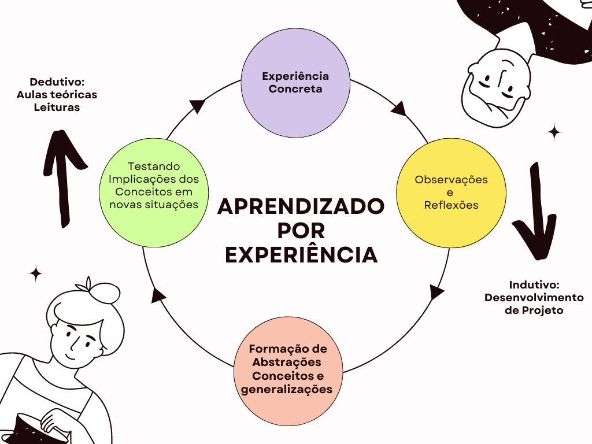
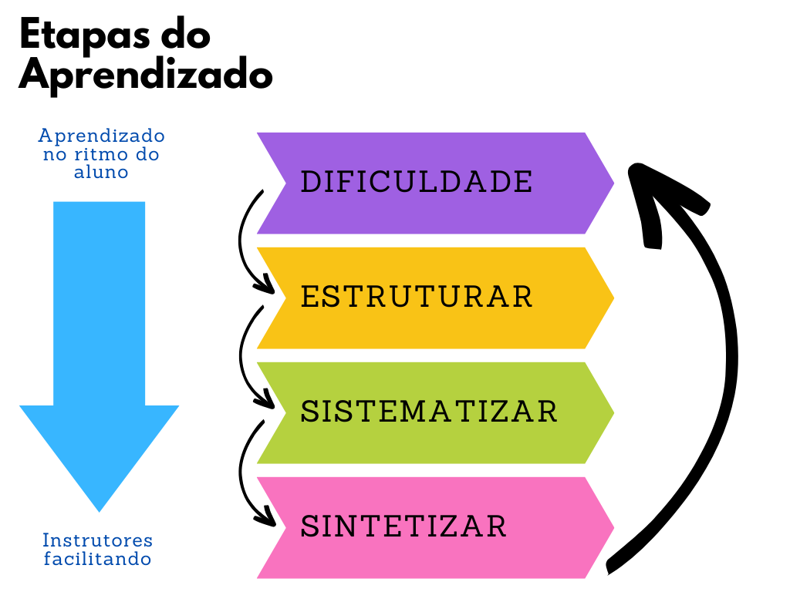

Aprendizado Orientado à Experiência - Princípios básicos
Ideia Principal
O principal foco do aprendizado orientado à experiência é criar a “jornada de descoberta”, para que o aluno tenha aprendizagem autônoma, além de práticas e cultura alinhadas com demandas do mercado
A aprendizagem orientada a experiência permite que os participantes aprendam de forma significativa e duradoura. Em vez de apenas receber informações teóricas, eles são colocados em situações reais de aprendizado, em que podem aplicar os conceitos teóricos aprendidos e vivenciar na prática os desafios enfrentados na área de engenharia de software.
O modelo de referência importante para a construção de um curso eficaz é o modelo de aprendizagem experiencial de David Kolb (Figura 1). Esse modelo sugere que os alunos precisam passar por uma “jornada de descoberta”, onde eles sentem que ganharam a compreensão da lição por meio do processo experiencial de chegar lá. O ciclo de Kolb é composto de quatro macro etapas principais:
- Experiência concreta: é a fase inicial, onde os participantes são expostos a uma experiência real e concreta, no nosso caso, um projeto de Software.
- Observação reflexiva: após a experiência, os participantes são incentivados a refletir sobre o que aconteceu, a analisar as causas e consequências e a identificar padrões e tendências.
- Conceitualização abstrata: com base nas observações e reflexões, os participantes são convidados a formular conceitos, teorias e hipóteses que expliquem o que aconteceu e que possam ser aplicados em outras situações.
- Experimentação ativa: por fim, os alunos são encorajados a aplicar os conceitos e teorias formulados em novas experiências, para verificar sua validade e eficácia.

Esse ciclo de aprendizagem se repete continuamente, permitindo que os alunos ampliem e aprofundem seus conhecimentos e habilidades ao longo do tempo. Para que esse modelo seja efetivo, é importante que os educadores ofereçam um ambiente seguro e estimulante para as experiências, promovam a reflexão e a discussão das observações, incentivem a formulação de conceitos e teorias e apoiem os alunos em sua experimentação ativa.
Um dos elementos-chave do modelo de aprendizagem experiencial é que ele requer um certo nível de autodescoberta e aprendizagem autônoma. Para desenvolver essas habilidades em um ciclo de aprendizagem ativa, o estudante/participantes devem passar por quatro macro etapas: dificuldade, estruturar, sistematizar e sintetizar.

A primeira etapa, de dificuldade (Struggle), é quando os alunos são desafiados a experimentar algo novo, a se envolver em uma tarefa ou projeto que esteja fora de sua zona de conforto. Nessa fase, o objetivo é criar um senso de urgência e motivação nos alunos, incentivando-os a se engajar ativamente no processo de aprendizagem. Para que o aluno passe sinta a dificuldade, deve ser disponibilizado o mínimo de informação sobre o projeto, sobre as entregas, e sobre o que é esperado. Assim, a dificuldade sentida impulsiona os participantes a procurar informações, estudar, correr atras do que for necessário para trabalhar.
A segunda etapa, de estruturar, envolve ajudar os alunos a organizar suas observações e reflexões, a fim de extrair significado e compreensão a partir de suas experiências. Isso pode ser feito por meio de discussões em grupo, anotações individuais, mind maps ou outras ferramentas que ajudem os alunos a organizar suas ideias.
A terceira etapa, de sistematizar, é quando os alunos começam a aplicar conceitos e teorias para dar sentido às suas observações e reflexões. Essa etapa envolve a construção de conexões entre a experiência e o conhecimento adquirido, ajudando os alunos a formular ideias mais amplas e abstratas. Em um contexto de aprendizado ágil, conceitos teóricos e experiências em um ciclo de projeto podem ser aplicados para medir e otimizar a produtividade da equipe, quanto melhorar a qualidade do software desenvolvido guiados pelas práticas XP.
Por fim, a quarta etapa, de sintetizar, é quando os alunos consolidam seus aprendizagens, integrando seus novos conhecimentos e habilidades em suas vidas cotidianas. Nessa etapa, é importante incentivar os alunos a refletir sobre o que aprenderam e como podem aplicar suas novas habilidades em sua vida profissional ou pessoal.
Para apoiar essas quatro etapas, uso uma variedade de métodos de ensino digital, como fóruns de discussão online e plataformas de colaboração. Cada método é escolhido com base nas necessidades específicas de cada etapa do processo de aprendizagem, ajudando os alunos a se engajar ativamente e a criar um ambiente de aprendizagem colaborativa e significativa. Na próxima sessão, vamos apresentar como aplicamos os conceitos relacionados a aprendizagem orientada a experiencia para acelerar a imersão em conceitos relacionados à Engenharia de Software.
Saiba mais sobre Aprendizagem Orientado à Experiência
Caso você tenha interesse em aprofundar seus conhecimentos na metodologia do Aprendizado Orientado à Experiência (experiential learning), seguem abaixo algumas referências úteis: